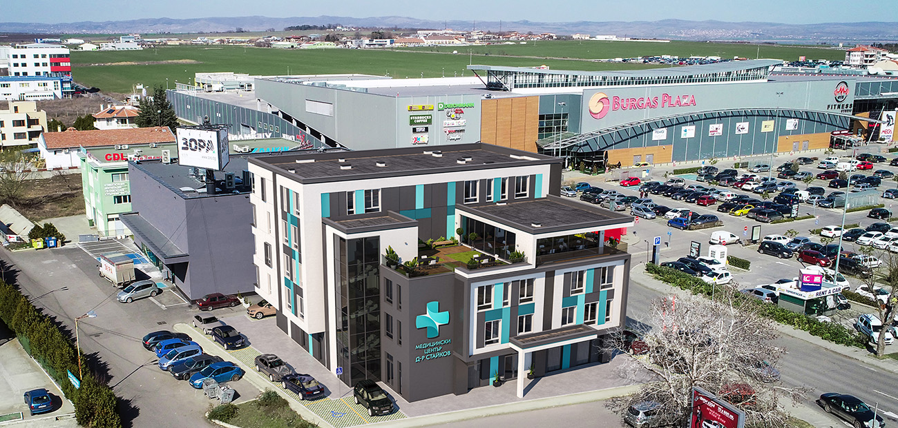
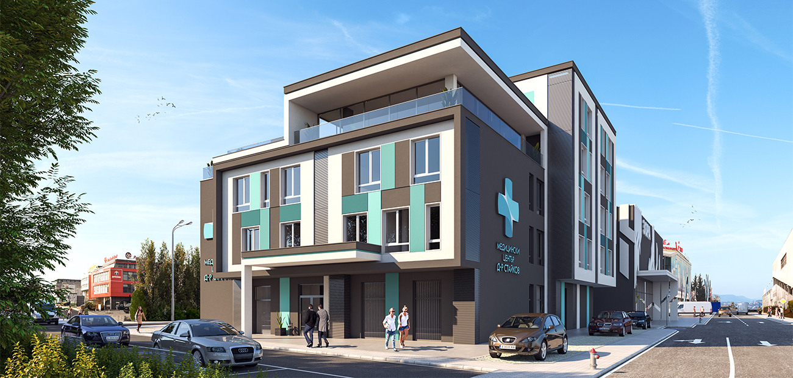
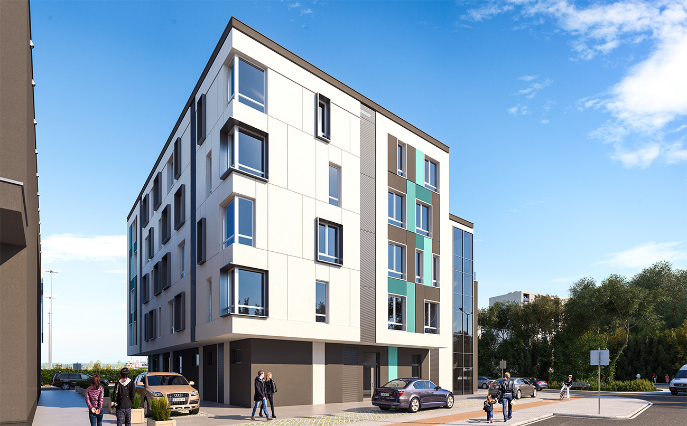
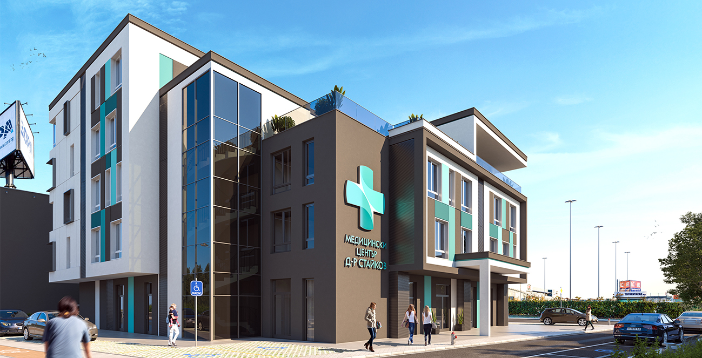

Medical Center Dr Staykov

Designed by STUDIO CREARCH with lead Architect Desislava Petrova, Medical Center Dr Staykov embodies the mission to provide “exceptional care without exception.” Located on a highly visible site, next to Plaza Mall in Izgrev Building Complex in Burgas, the five-story building represents reconstruction and refurbishment of an existing office building. This new medical center is an expansion of the existing Dr Staykov Rehabilitation Center located in the center of the city.
This new building will expand the existing functionalities of the first center. On the first story are placed a foyer with registration desks, pharmacy, X-ray and mamograph facity, clinical laboratory, bathrooms, storage rooms and the following doctor’s offices: pediatric, two for individual practice for primary care, internal medicine, imaging diagnostics.
On the second story are planned the following doctor’s offices in specialties with therapeutic orientation: cardiology, nervous diseases, endocrinology and metabolic diseases, rheumatology; area for doctors' offices in specialties with surgical orientation - surgery, orthopedics and traumatology and UNGB; area for rooms with beds for observation and treatment; area for outpatient operating room; bathrooms, storage rooms.
On the third story is a unit for physical and rehabilitation medicine (FRM), which includes: registration; two doctors' offices in physical and rehabilitation medicine; changing rooms for patients;; separate cabins for electro- and light treatment and high-intensity magnetotherapy; active kinesitherapy; mechanotherapy and functional reeducation; therapeutic massage rooms; bathrooms, storage rooms.
On the forth story are situated administrative offices for the Medical Center - office of the manager of the medical center with private bathroom, administrative offices, archive room, office for medical secretary,
office for chief accountant, conference hall with 14 seats, storage room, buffet -catering for staff with packaged food, bathrooms. On the floor there is an outdoor terrace and a covered terrace type winter garden
.
The fifth floor will hold the archive of the Medical Center.
The architect worked closely with the client, paying strict attention to the medical center’s regulatory and functional requirements. This collaboration resulted in simple, elegant and modern design that blends harmoniously with the surrounding environment and the near location to the sea.

Project Info:
Architects: STUDIO CREARCH
Location: Burgas, Bulgaria
Area: 2 800 m2
Year: 2019
Project Name: Medical Center Dr Staykov